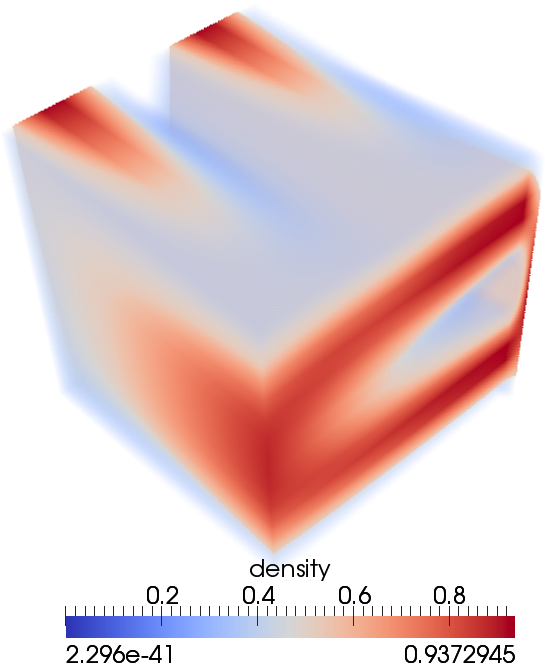
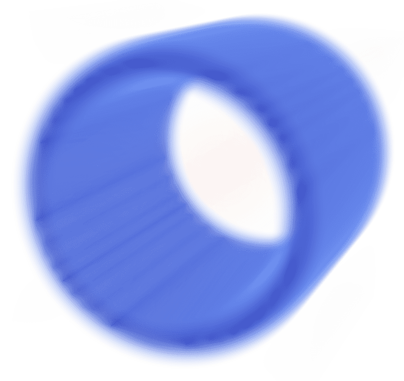

Importer des données#
Sources de données#
Il y a deux types de sources de données :
On peut créer des données de base à partir d’un objet Source.
On peut aussi lire des données à partir d’un fichier.
Tel que mentionné en introduction, ParaView peut charger des dizaines de formats de données – les principaux sont listés dans la note ci-dessous.
Liste des formats de données pris en charge
La liste ci-dessous est basée sur ParaView 5.9.0 en date du 2 avril 2021.
ADAPT Files (
*.nc *.cdf *.elev *.ncd)Adaptive cosmo files (
*.cosmo)ADIOS2 BP3 File (Corelmage) (
*.bp)ADIOS2 BP4 Directory (Corelmage) (
*.bp)ADIOS2 BP4 Metadata File (Corelmage) (
md.idx)AMR Enzo Files (
*.boundary *.hierarchy)AMR Flash Files (
*.Flash *.flash)AMR Velodyne Files (
*.xarnr *.Xamr *.XAMR)AMReX/BoxLib plotfiles (grids) (
plt*)AMReX/BoxLib plotfiles (particles) (
plt*)ANSYS Files (
*.inp)AU File Files (
*.aux)AVS UCD Binary/ASCII Files (
*.inp)BOV Files (
*.bov)BYU Files (
*.g)CAM NetCDF (Unstructured) (
*.nc *.ncdf)Case file for restarted CTH outputs
CCSM MTSD Files (
*.nc *.cdf *.elev *.ncd)CCSM STSD Files (
*.nc *.cdf *.elev *.ncd)CEAucd Files (
*.ucd *.inp)CGNS Files (
*.cgns)Chombo Files (
*.hdf5 *.h5)CityGML files (
*.gml *.xml)Claw Files (
*.claw)CMAT Files (
*.cmat)CML (
*.cml)CONVERGE CFD (
*.h5)Cosmology Files (
*.cosmo64 *.cosmo)CTRL Files (
*.ctrl)Curve2D Files (
*.curve *.ultra *.ult *.u)DDCMD Files (
*.ddcmd)Delimited Text (
*.csv *.tsv *.txt *.CSV *.TSV *.TXT)DICOM Files (directory) (
*.dcm)DICOM Files (single) (
*.dcm)Digital Elevation Map Files (
*.dem)Dyna3D Files (
*.dyn)EnSight Files (
*.case *.CASE *.Case)EnSight Master Server Files (
*.sos *.SOS)ENZO AMR Particles (
*.boundary *.hierarchy)Exodus11 (
*.g *.gc *.ex2 *.ex2v2 *.exo *.gen *.par)ExtrudedVol Files (
*.exvol)Facet Polygonal Data Files (
*.facet)Fides Data Model File (JSON) (
*.json)Fides Files (ADIOS2 BP) (
*.bp)FLASH AMR Particles Reader (
*.Flash *.flash)FLASH Files (Visit) (
*.flash *.f5)Fluent Case Files (
*.cas)Fluent Files (Visit) (
*.cas)FVCOM MTMD Files (
*.nc *.cdf *.elev *.ncd)FVCOM MTSD Files (
*.nc *.cdf *.elev *.ncd)FVCOM Particle Files (
*.nc *.cdf *.elev *.ncd)FVCOM STSD Files (
*.nc *.cdf *.elev *.ncd)Gadget Files (
*.gadget)Gaussian Cube Files (
*.cube)GDAL Raster (
*.tif *.gen *.thf *.adf *.arg *.blx *.xlb)GDAL Vector (
*.shp *.faa *.bnn *.dxf *.csv *.geojson)Generic10 files to MultiBlockDataSet (
*.gio)Generic10 files to UnstructuredGrid (
*.gio)GGCM Files (
*.3df *.mer)gITF 2.0 Files (
*.gltf *.glb)GTC Files (
*.h5)GULP Files (
*.trg)H5Nimrod Files (
*.h5nimrod)H5Part particle files (
*.h5part)HyperTreeGrid (
*.htg)HyperTreeGrid (partitioned) (
*.phtg)Image Files (
*.pnm *.ppm *.sdt *.spr *.imgvol)JPEG Image
LAMMPS Dump Files (
*.dump)LAMMPS Struct. (
*.eam *.meam *.rigid *.lammps)Legacy VTK files (
*.vtk *.vtk.series)Legacy VTK Files (partitioned) (
*.pvtk)Lines Files (
*.lines)LODI Files (
*.no *.cdf *.elev *.ncd)LODI Particle Files (
*.nc *.cdf *.elev *.ncd)LSDyna (
*.k *.lsdyna *.d3plot)M3DC1 Files (
*.h5)Meta Image Files (
*.mhd *.mha)Meta-Generic10 files (
*.gios)Metafile for restarted exodus outputs
MFiX netcdf Files (
*.nc)MFiX Res Files (Visit) (
*.RES)MFIX Unstructured Grid Files (
*.RES)Mill Files (
*.m)Miranda Files (
*.mir *.raw)MM5 Files (
*.mm5)MotionFX CFG Files (
*.cfg)MPAS NetCDF (Unstructured) (
*.ncdf *sic)MRC Image Files (
*.mrc *.ali *.st *.rec)Multilevel 3D Plasma Files (
*.m3d *.h5)NASTRAN Files (
*.nas *.f06)Nek5000 (
*.nek3d *.nek2d *.nek5d *.nek5000 *.nek)netCDF generic and CF conventions (
*.ncdf *.nc)Nrrd Raw Image Files (
*.nrrd *.nhdr)OME TIFF Files (
*.ome.tif *.ome.tiff)OpenFOAM (
*.foam)OpenFOAM Files (Visit) (
*.controlDict)openPMD files (
*.pmd)OVERFLOW Files (Visit) (
*.dat *.save)ParaDIS Files (
*.prds *.data *.dat)ParaDIS Tecplot (
Mid *.field *.cyl *.cylinder *.dat)Parallel POP Ocean NetCDF (
*.pop.ncdf *.pop.nc)ParaView Data Files (
*.pvd)ParaView Ensemble Data (
*.pve)PATRAN Files (
*.neu)PFLOTRAN Files (
*.h5)Phasta Files (
*.pht)PIO Dump Files (
*.pio)Pixie Files (
*.h5)PLOT2D Files (
*.p2d)PLOT3D Files (
*.xyz)PLOT3D Meta Files (
*.p3d)PLY Polygonal File Format (
*.ply *.ply.series)PNG Image Files (
*.png)POINT3D Files (
*.3D)POP Ocean NetCDF Rectilinear (
*.pop.nc*)POP Ocean NetCDF Unstructured (
*.pop.nc*)proSTAR Files (
*.cel *.vrt)Protein Data Bank Files (
*.pdb)Protein Data Bank Files (Visit) (
*.ent *.pdb)PTS (Point Cloud) Files (
*.pts)Radiance HDR file (
*.hdr)Raw (binary) Files (
*.raw)RAW Files (
*.raw)SAMRAI series files (
*.samrai)SAR Files (
*.SAR *.sar)SAS Files (
*.sasgeom *.sas *.sasdata)SEG-Y Files (
*.sgy *.segy)SEP file (Plugin) (
*.H)Silo Files (
*.silo *.pdb *.silo.series *.pdb.series)SLAC Mesh Files (
*.ncdf *.nc)SLAC Particle Files (
*.ncdf *.netcdf)Spheral Files (
*.spheral *.sv)Spy Plot History Files (
*.hscth *hsct*)SpyPlot CTH dataset (
*.spct* spot*)Stereo Lithography (
*.stl *.stl.series)Tecplot Binary Files (Visit) (
*.plt)Tecplot Files (
*.tee *.TEC *.Tec *.tp *.TP *.dat)Tecplot Files (Visit) (
*.tec *.TEC *.Tec *.tp *.TP)Tecplot Table (
*.dat *.DAT)Tetrad Files (
*.hdf5 *.h5)TFT Files (
*.dat *.tft)TIFF Image Files (
*.tif *.tiff)TRUCHAS dataset (
*.hdf5 *.h5)TSurf Files (
*.ts_deg83)UNIC Files (
*.h5)VASP Animation Files (
*.out)VASP CHGCA Files (
*.CHG*)VASP OUT Files (
*.OUT*)VASP POSCAR Files (
*.POS*)VASP Tessellation Files (
*.out)Velodyne Files (
*.vld *.rst)Visit MetaPLOT3D Files (Visit) (
*.vp3d)VizSchema Files (
*.h5 *.vsh5)VPIC Files (
*.vpc)VRML 2 Files (
*.wrl *.vrml)VTK Hierarchical Box Data Files (
*.vthb)VTK ImageData Files (
*.vti *.vti.series)VTK ImageData Files (partitioned) (
*.pvti)VTK MultiBlock Data Files (
*.vtm *.vtmb)VTK Particle Files (
*.particles)VTK Partitioned Dataset Collection Files (
*.vtpc)VTK Partitioned Dataset Files (
*.vtpd *.vtpd.series)VTK PolyData Files (
*.vtp *.vtp.series)VTK PolyData Files (partitioned) (
*.pvtp)VTK RectilinearGrid Files (
*.vtr *.vtr.series)VTK RectiiinearGrid Files (partitioned) (
*.pvtr)VTK StructuredGrid Files (
*.vts *.vts.series)VTK StructuredGrid Files (partitioned) (
*.pvts)VTK Table (partitioned) (
*.pvtt *.pvtt.series)VTK Table Files (
*.vtt *.vtt.series)VTK UnstructuredGrid Files (
*.vtu *.vtu.series)VTK UnstructuredGrid Files (partitioned) (
*.pvtu)VTX reader: ADIOS2 BP3 File (
*.bp)VTX reader: ADIOS2 BP4 Directory (
*.bp *.bp4)Wavefront OBJ Files (
*.obj)WindBlade Data (
*.wind)Xdmf Reader (
*.xmf *.xdmf *.xmf2 *.xdmf2)Xdmf3 Reader (
*.xmf *.xdmf *.xmf3 *.xdmf3)Xdmf3 Reader (Top Level Partition) (
*.xmf* *.xdmf)Xmdv Files (
*.okc)XMol Molecule Files (
*.xyz)XYZ Files (
*.xyz)
Exemple – Lire des données brutes ou binaires#
On souhaite visualiser la fonction suivante pour \(x,y,z\in[0,1]\) sur une grille \(16 \times 16 \times 16\) :
\(f(x,y,z)=(1-z)\left[(1-y)\sin(\pi x) + y\sin^2(2\pi x)\right] + z\left[(1-x)\sin(\pi y) + x\sin^2(2\pi y)\right]\)
Ouvrez le fichier
~/prv101-main/lab/simpleData.raw.Lorsque demandé, sélectionnez Image Reader.
Spécifiez ensuite les propriétés des données :
Data Scalar Type :
floatData Byte Order :
LittleEndianScalar Array Name :
densityFile Dimensionality :
3Data Extent :
0à15pour chaque dimension (1à16chargerait les données incorrectement).
Modifiez la vue : Outline, Points, Wireframe, Volume.
Avec la vue en Volume, éditez l’échelle de couleurs.

(Optionnel) Sauvegardez et rechargez les données.
Via File \(\rightarrow\) Save Data…, sauvegardez l’objet dans un fichier de données ParaView (
*.pvd).Supprimez l’objet.
Chargez le fichier
*.pvd– ce fichier de données contient effectivement toutes les propriétés que nous avons définies.
VTK = Visualization Toolkit#
Qu’est-ce que le Visualization Toolkit, plus connu sous l’acronyme VTK?
C’est un système logiciel libre pour l’infographie 3D, le traitement d’images et la visualisation.
Des interfaces sont fournies pour C++, Tcl, Java et Python, ainsi que pour JavaScript (partiellement, depuis seulement 2016).
ParaView est basé sur VTK, donc il est compatible avec les mêmes formats de fichiers standards pris en charge par VTK :
VTK a aussi ses propres formats de fichiers : https://docs.vtk.org/en/latest/vtk_file_formats
Anciens formats séquentiels (
*.vtk) : lignes d’entête en ASCII + données ASCII/binaires.Formats XML : balises XML + données ASCII/binaires/compressées.
Plus récent, largement préféré aux anciens formats VTK.
Prend en charge la lecture et l’écriture en parallèle, la compression, l’encodage binaire portable (big/little endian), les accès aléatoires, etc.
Formats VTKHDF (en développement depuis 2022) :
HDF5 est utilisé pour le stockage des données.
Performance améliorée des lectures et écritures séquentielles et parallèles.
Prise en charge des structures de données hiérarchiques.
Devrait éventuellement remplacer les autres formats VTK.
Principaux types de discrétisation des données#
VTK prend en charge plusieurs types de discrétisation de données 1D, 2D et 3D :
Discrétisations structurées :
Image ou points structurés :
*.vti, points sur une grille rectangulaire régulière, des scalaires ou des vecteurs à chaque point.Grille rectiligne :
*.vtr, comme le précédent, mais l’espacement entre les points peut varier ; il faut fournir les intervalles le long des axes de coordonnées et non les coordonnées de chaque point.Grille structurée :
*.vts, topologie régulière, mais géométrie irrégulière ; il faut indiquer les coordonnées de chaque point.
{kind=link}
Autres discrétisations :
Particles/Points non structurés :
*.particles.Données polygonales :
*.vtp, topologie et géométrie non structurées, coordonnées de points, cellules 2D uniquement (c’est-à-dire pas de polyèdres), adapté aux cartes géographiques.Grille non structurée :
*.vtu, topologie et géométrie irrégulières, coordonnées de points, cellules 2D/3D, adaptée à l’analyse par éléments finis et à la conception de structures.
{kind=link}
Attributs des données#
Un fichier VTK peut stocker plusieurs ensembles de données, chacun pouvant être de l’un des types suivants :
Scalaires : des valeurs individuelles de densité, de température, de pression, etc.
Vecteurs : direction et magnitude, par exemple des vecteurs de vitesse.
Normales : vecteurs de direction (\(|\vec{n}|=1\)) surtout utilisés pour des effets d’ombrage dans le rendu.
Tenseurs : tenseurs symétriques de \(3\times3\) valeurs réelles, par exemple des tenseurs de stress mécanique.
Indices d’une table de correspondance : chaque valeur est un indice vers une ligne spécifique dans une table de correspondance, par exemple une table de couleurs prédéterminées qui contiendrait des tuples rouge-vert-bleu-alpha (où alpha=1 est opaque et alpha=0 est transparent) ; dans cet exemple, si le format du fichier est en ASCII, les valeurs de la table de correspondance doivent être des nombres à virgule flottante dans la plage [0,1].
Coordonnées de texture : utilisées pour le mappage de textures.
Données de champs (
FieldData) : tableaux de tableaux de données.
Exemples – Lire un fichier VTK de l’ancien format#
Attention : Stocker de grandes quantités de données en ASCII n’est pas une bonne idée ; nous allons ici examiner des fichiers VTK textuels à des fins pédagogiques.
Exemple de points structurés :
~/prv101-main/lab/volume.vtkGrille régulière de \(3\times4\times6\) points, un champ scalaire (
density) et un champ vectoriel (velocity).
# vtk DataFile Version 3.0 Volume example ASCII DATASET STRUCTURED_POINTS DIMENSIONS 3 4 6 SPACING 0.1 0.1 0.1 ORIGIN 0 0 0 POINT_DATA 72 SCALARS density float 1 LOOKUP_TABLE default 0. 0. 0. 0. 0. 0. 0. 0. 0. 0. 0. 0. 0. 5. 10. 15. 20. 25. 25. 20. 15. 10. 5. 0. 0. 10. 20. 30. 40. 50. 50. 40. 30. 20. 10. 0. 0. 10. 20. 30. 40. 50. 50. 40. 30. 20. 10. 0. 0. 5. 10. 15. 20. 25. 25. 20. 15. 10. 5. 0. 0. 0. 0. 0. 0. 0. 0. 0. 0. 0. 0. 0. VECTORS velocity float 1. 1. 1. [...]
Exemple de grille structurée :
~/prv101-main/lab/density.vtkGrille de \(2\times2\times2\) points, un seul champ scalaire.
# vtk DataFile Version 3.0 vtk output ASCII DATASET STRUCTURED_GRID DIMENSIONS 2 2 2 POINTS 8 float 2.667 -3.7747 23.8329 2.94346 -3.7482 23.66 3.21986 -3.7217 23.49 3.50007 -3.7020 23.37 3.9116 -3.7270 23.53 4.1656 -3.69529 23.33 4.2278 -3.7105 22.48 4.3876 -3.6832 21.73 POINT_DATA 8 SCALARS density float LOOKUP_TABLE default 0.498983 0.376668 0.333115 0.311612 0.267114 0.639897 0.479756 0.477011
Exemple plus complexe (données de polygone) :
~/prv101-main/lab/cube.vtkUn cube est représenté par six faces polygonales.
# vtk DataFile Version 2.0 cube represented by six polygonal faces ASCII DATASET POLYDATA POINTS 8 float 0.0 0.0 0.0 1.0 0.0 0.0 1.0 1.0 0.0 0.0 1.0 0.0 0.0 0.0 1.0 1.0 0.0 1.0 1.0 1.0 1.0 0.0 1.0 1.0 POLYGONS 6 30 4 0 1 2 3 4 4 5 6 7 4 0 1 5 4 4 2 3 7 6 4 0 4 7 3 4 1 2 6 5
Une composante scalaire, une normale et des données de champs sont définies pour chacune des six faces (
CELL_DATA).CELL_DATA 6 SCALARS cell_scalars int 1 LOOKUP_TABLE default 0 1 2 3 4 5 NORMALS cell_normals float 0 0 -1 0 0 1 0 -1 0 0 1 0 -1 0 0 1 0 0 FIELD FieldData 2 cellIds 1 6 int 0 1 2 3 4 5 faceAttributes 2 6 float 0.0 1.0 1.0 2.0 2.0 3.0 3.0 4.0 4.0 5.0 5.0 6.0
Des données scalaires sont associées aux huit sommets (
POINT_DATA). Une table de correspondance de huit couleurs, associées aux données scalaires, est également définie.POINT_DATA 8 SCALARS sample_scalars float 1 LOOKUP_TABLE my_table 0 1 2 1 1 2 3 2 LOOKUP_TABLE my_table 8 0.0 0.0 0.0 1.0 1.0 0.0 0.0 1.0 0.0 1.0 0.0 1.0 1.0 1.0 0.0 1.0 0.0 0.0 1.0 1.0 1.0 0.0 1.0 1.0 0.0 1.0 1.0 1.0 1.0 1.0 1.0 1.0
Exercice pour la maison – Fichier de données VTK 3D#

Instructions
Créez un fichier
*.vtkavec les \(30^3\) valeurs du fichier~/prv101-main/lab/cylinder.dat.Ajoutez et ajustez une entête ASCII en s’inspirant de
~/prv101-main/lab/volume.vtk.Dans ParaView, visualisez ensuite les données en mode Volume.
Éditez le Color Map :
Cliquez sur Choose Preset et sélectionnez Warm to Cool dans All.
Ensuite, abaissez la courbe d’opacité à 0 vis-à-vis le bleu pâle.